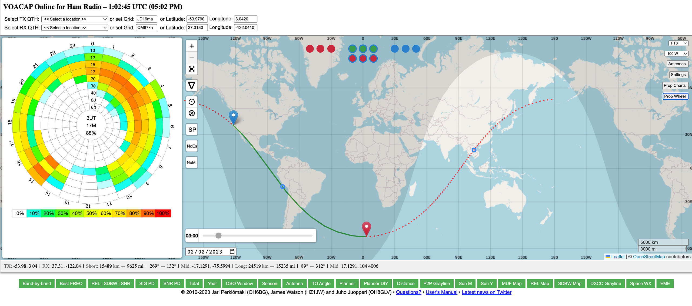

_______________________________________________To help make sure you get in the Bouvet log soon here are some useful tips from my friend Lou, N2TU. I’ve been on 3 DXpeditions with him.Pay attention to the VOACAP discussion, and especially the use of the Propagation Wheel. Here is the VOACAP website:Attached is my snapshot showing what your chances are of working them from the Bay Area, in FT8 mode with 100 watts using simple dipole antennas. It can be done.To customize the Wheel for your QTH and operating conditions:1. At the top of the page, add the Grid square for Bouvet: JD16ma2. And Your Grid square — in my case CM87xh3. Choose your mode and power from the menus in upper right corner4. From Settings, choose an expected SSN #. If you check Dyn SSN, you’ll get a 3-day rolling average for the month.5. The wheel updates automatically to show best expected propagation Times for each Band, using your settings. Orange/Red = Good propagation expected. Blue-Green = not so good.Change Mode, Power, and Antennas to match your operating conditions for each Band, and the Wheel will automatically update to show the predicted openings.Default readings are for Short Path (S). If you want to see what your chances are using Long Path, click the SP button on the map.The sliding bar will show expected grayline activity at different times. It looks like 0200-0400 UTC will be optimal for Northern California/Bouvet. I froze it at 0300 UTC in this snapshot.Lots of other useful information from VOACAP — keep playing with it.In the video, Lou also mentions several other common sense tips to help you work this DXpedition.Hope this helps. Good luck.73,John, K6MM
Chat mailing list
Chat@ncdxc.org
http://mail.ncdxc.org/mailman/listinfo/chat_ncdxc.org